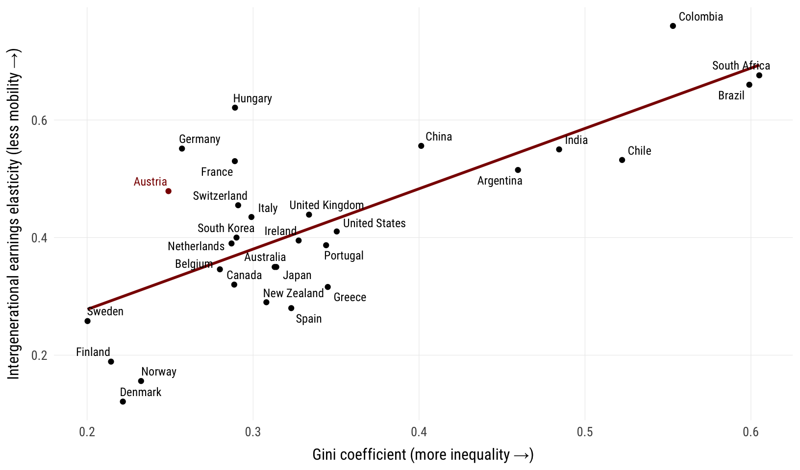
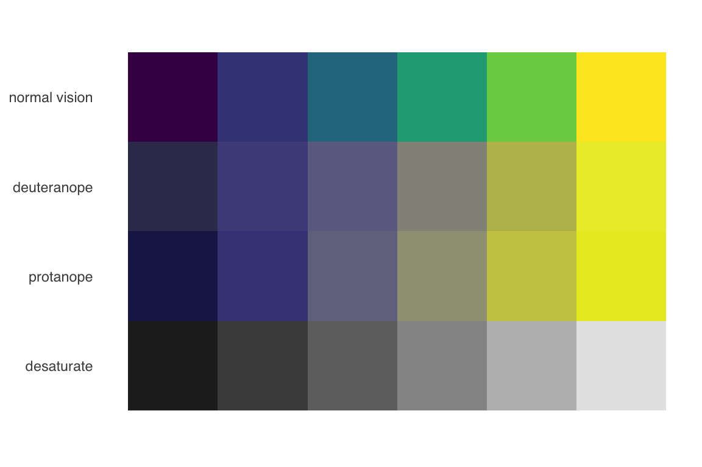

Economic Policy Visualization
Mobility · Colors
Dr. Matthias Schnetzer
November 11, 2024
Discuss with your neighbour
How would you describe the state of intergenerational social mobility in your country?
Which channels do you know where parents exert influence on the socio-economic outcomes of children?


Illustrations by https://openpeeps.com.
Selected channels of intergenerational persistence
- Children of well-off families attend better educational institutions, which results in higher incomes later on.
- Family background shapes individual labor market-related characteristics (Habitus, social and cultural capital, health, etc.)
- Children of poorer families face higher opportunity costs at their job search and tend to accept the first job opportunity
- Social networks of the well-off facilitate job search substantially
Glass ceiling
That room [at the top] rarely opens up because those mediocrities are too well-screened by parents who hire private tutors, buy cultural enrichment, teach etiquette, set expectations, stand as personal examples of success, coach interview technique, navigate any bureaucratic maze put before them, set up home in nice areas, arrange internships via friends and, just to rub in their supremacy, make direct gifts of cash and assets. To fail under these conditions is a kind of achievement in itself.
Janan Ganesh
Financial Times (December 9, 2016)
Cultural capital matters
“Did you and your family regularly attend cultural activities (e.g. theatre) when you were ten years old?”
Traditional theory
Becker/Tomes (1979), Becker/Tomes (1986):
- Optimization problem for parental investments into the human capital of descendants (utility of parents is maximized)
- Stochastic term for “birth lottery” (genetic abilities, talents): Nature versus Nurture
- Parental utility does not only depend on the life-cycle income of the descendant, but there is dynastic utility
Response by Daly (1982): Provision of descendants in future generations is a public good, since the future offspring may potentially descend from all other members in a society.
Objection by Mani et al. (2013): Rational parental behaviour is limited by income and wealth, since poverty impedes cognitive abilities of adults and hinders rational investment decisions in childern.
Measurement of intergenerational mobility
Intergenerational earnings elasticity: \(\beta\) \[log~y_{ic} = \alpha + \beta~y_{ip} + \varepsilon_{ic}\] Intergenerational earnings correlation: \(\rho\) \[\rho = \beta~\frac{\sigma_p}{\sigma_c}\] with \(\sigma\) being the standard deviation.
Life cycle vs. current income
(Measurable) current income corresponds to life cycle income plus random transitory deviations \[ y_{ic}^* = y_{ic} + \omega_{ic} \\ y_{ip}^* = y_{ip} + \omega_{ip} \]
Intergenerational elasticity is calculated with current income records
\[ plim~\widehat{\beta} = \frac{cov(y_{ip}^*, y_{ic}^*)}{var(y_{ip}^*)} = \\ = \frac{\beta\left[var(y_{ip}) + cov(y_{ip}, \omega_{ip})\right] + cov(y_{ic}, \omega_{ic})/\beta + cov(\omega_{ic}, \omega_{ip})}{var(y_{ip}) + 2 \cdot cov(y_{ip}, \omega_{ip}) + var(\omega_{ip})} \]
Consequently there is an attenuation bias (downward bias) \[ plim~\widehat{\beta} = \beta \frac{var(y_{ip})}{var(y_{ip}) + var(\omega_{ip})} < \beta \]
Transition matrices
A transition matrix captures the probabilities of switches \(p_{ij}\) from status \(i\) to \(j\).
\[ P = \left[ {\begin{array}{cccc} p_{11} & p_{12} & \cdots & p_{1n}\\ p_{21} & p_{22} & \cdots & p_{2n}\\ \vdots & \vdots & \ddots & \vdots\\ p_{m1} & p_{m2} & \cdots & p_{mn}\\ \end{array} } \right] \]
There are various indices to compare transition matrices:
- Prais-Index: \(M(P) = \frac{n - trace(P)}{n-1}\) where \(M(P) \in [0,1]\)
- Absolute Average Jump (AAJ): \(\Omega = \frac{\sum_{i=1}^{n}|rank_{ic} - rank_{ip}|}{n}\)
Great Gatsby curve
Educational mobility in Austria
Decreasing absolute mobility in the US

Long-term social persistence
- üá¨üáß Clark/Cummins (2015): Richest british families around 1850 still own four times the average family wealth in 2012
(= 5 generations later) - üáÆüáπ Barone/Mocetti (2020): Families with highest income in Florence in 1427 still are at the top of the income distribution in 2011
(= 6 centuries later) - üá©üá™ Braun/Stuhler (2017): Social status in Germany also depends from the great-grandparents.
(= 4 generations later)
Mobility takes generations
All colours are beautiful
Colors in R
You can assign colors by names
- “red”, “green”, “chocolate”, “cadetblue”, etc.
- See a complete list of the 657 colors typing colors()
[1] "white" "aliceblue" "antiquewhite" "antiquewhite1"
[5] "antiquewhite2" "antiquewhite3" "antiquewhite4" "aquamarine"
[9] "aquamarine1" "aquamarine2" "aquamarine3" "aquamarine4"
Alternatively, you can use hex color codes
- #F8766D, #00BA38, #619CFF, etc.
- Use color picker to get hex code, e.g. https://htmlcolorcodes.com
Color palettes of {RColorBrewer}
Sequential
Use to encode numerical information with order
Diverging
Use to encode numerical information with critical midpoint
Qualitative
Use to encode categorical information

Color blindness
You may check whether the color scale works for people who can distinguish fewer colours than others with {colorBlindness}.
The viridis color scale is discriminable under the most common forms of colour blindness, and reproduces well in greyscale.

Fancy palettes

Color scales in {ggplot}
scale_color_*
scale_fill_*
Continuous:
- continuous(type)
- distiller(palette)
- gradient(high, low)
- gradient2(high, mid, low)
- gradientn(colours)
- viridis_c(option)
Discrete:
- manual(values)
- brewer(palette)
- grey(start, end)
- viridis_d(option)
Bibliography
Barone, Guglielmo/Mocetti, Sauro (2020). Intergenerational Mobility in the Very Long Run: Florence 1427-2011. The Review of Economic Studies, 88(4), 1863–1891. DOI: 10.1093/restud/rdaa075
Becker, Gary/Tomes, Nigel (1979). An Equilibrium Theory of the Distribution of Income and Intergenerational Mobility. The Journal of Political Economy, 87(6), 1153–1189.
Becker, Gary/Tomes, Nigel (1986). Human Capital and the Rise and Fall of Families. Journal of Labor Economics, 4(3), S1–S39.
Braun, Sebastian Till/Stuhler, Jan (2017). The Transmission of Inequality Across Multiple Generations: Testing Recent Theories with Evidence from Germany. The Economic Journal, 128(609), 576–611. DOI: 10.1111/ecoj.12453
Chetty, Raj/Grusky, David/Hell, Maximilian/Hendren, Nathaniel/Manduca, Robert/Narang, Jimmy (2017). The Fading American Dream: Trends in Absolute Income Mobility Since 1940. Science, 356(6336), 398–406. DOI: 10.1126/science.aal4617
Clark, Gregory/Cummins, Neil (2015). Intergenerational Wealth Mobility in England, 1858–2012: Surnames and Social Mobility. The Economic Journal, 125(582), 61–85. DOI: 10.1111/ecoj.12165
Corak, Miles (2013). Income Inequality, Equality of Opportunity, and Intergenerational Mobility. Journal of Economic Perspectives, 27(3), 79–102. DOI: 10.1257/jep.27.3.79
Daly, Herman E. (1982). Chicago School Individualism Versus Sexual Reproduction: A Critique of Becker and Tomes. Journal of Economic Issues, 16(1), 307–312.
Franzini, Maurizio/Raitano, Michele (2009). Persistence of Inequality in Europe: The Role of Family Economic Conditions. International Review of Applied Economics, 23(3), 345–366. DOI: 10.1080/02692170902811777
Mani, Anandi/Mullainathan, Sendhil/Shafir, Eldar/Zhao, Jiaying (2013). Poverty Impedes Cognitive Function. Science, 341(6149), 976–980. DOI: 10.1126/science.1238041
OECD (2018). A broken social elevator? How to promote social mobility. OECD Publishing. DOI: 10.1787/9789264301085-en
Scherer, Cédric (2022). Graphic Design with Ggplot2. https://rstudio-conf-2022.github.io/ggplot2-graphic-design/
Six, Eva/Schnetzer, Matthias (2024). Highbrow Heritage: The Effects of Childhood Cultural Capital on Wealth. Review of Economics of the Household. DOI: 10.1007/s11150-024-09733-6

PI 0750 Economic Policy (Applied track) | Winter term 2024